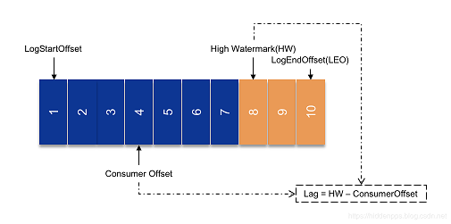

Kafka消费者 #
总结 #

lag #

消费者 #
- 批量消费
- 消费者的ZeroCopy:
直接把消息从文件里发送到网络通道， 而不需要内核与用户态之间数据的来回复制。
Q&A #
-
怎么计算Lag？(注意read_uncommitted和read_committed状态下的不同) -
“消费组中的消费者个数如果超过topic的分区，那么就会有消费者消费不到数据”这句话是否正确？如果不正确，那么有没有什么hack的手段？
-
消费者提交消费位移时提交的是当前消费到的最新消息的offset还是offset+1?
-
有哪些情形会造成重复消费？
Kafka常见的导致重复消费原因和解决方案
原因3:（重复消费最常见的原因）：消费后的数据，当offset还没有提交时，partition就断开连接。比如，通常会遇到消费的数据，处理很耗时，导致超过了Kafka的session timeout时间（0.10.x版本默认是30秒），那么就会re-blance重平衡，此时有一定几率offset没提交，会导致重平衡后重复消费。 -
那些情景下会造成消息漏消费？
Kafka 可靠性总结
聊聊 Kafka：Kafka 消息丢失的场景以及最佳实践 -
KafkaConsumer是非线程安全的，那么怎么样实现多线程消费？
-
简述消费者与消费组之间的关系
-
Kafka的旧版Scala的消费者客户端的设计有什么缺陷？
参考 #
- Kafka设计解析（四）- Kafka Consumer设计解析 郭俊
- Kafka的Lag计算误区及正确实现 朱小厮
- 《kafka权威指南》 薛命灯 第3，4 ，5章
- Kafka Consumer机制优化-保证每条消息至少消费一次 幽灵之使
-
分区分配策略
Kafka分区分配策略（1）——RangeAssignor 朱小厮
Kafka分区分配策略（2）——RoundRobinAssignor和StickyAssignor 朱小厮
Kafka分区分配策略（3）——自定义分区分配策略 朱小厮图解Kafka消费者分区分配策略 石臻臻 kafka contributor *** 未